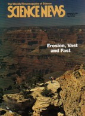

| Evolution in the News - October 2000 |
| by Do-While Jones |
 |
For years, creationists have said that the geologic evidence shows that a large lake, northeast of Arizona, breached a natural dam and drained rapidly, carving the Grand Canyon in a very short time.
Evolutionists have argued against this for many years, but the evidence is so overwhelming they have been forced to acknowledge at least part of the story. The cover of the September 30, 2000, issue of Science News showed a picture of the Grand Canyon, with the bold caption, "Erosion, Vast and Fast." According to the story's subtitle, "Carving this beloved hole in the ground may not have been such a long-term project." They said, |
|---|
|
About 75 years ago, geologists proposed that the Grand Canyon could be as little as 40 million years old. Now, however, evidence is mounting that the canyon is much younger still.
In fact, research presented last June at a conference devoted to the origin of the gorge--the first such meeting in more than 35 years--suggests that substantial portions of the eastern Grand Canyon are geological youngsters, having been eroded only within the past million years. 1 |
Thirty-five years ago. Hummm. They are referring to a meeting in 1964. It was 1961 when creationists started advancing serious objections to the theory of how the Grand Canyon was formed. 2 Maybe they looked at the creationist arguments in 1964 and didn't want to talk about the subject again until they could explain them.
|
Until the early 1900s, geologists held that the river maintained its present southwesterly course across northern Arizona throughout the life of the canyon. According to this view, tectonic forces lifted the Colorado Plateau while sediments carried by the river and its tributaries chewed their way downward to form the gorge.
In the 1930s however, geologists began to accumulate clues indicating the youth of the canyon. 3 |
Have geologists really doubted the traditional story of the formation of the canyon since the 1930s? If so, why did National Geographic magazine (used as a factual reference by public schools all over America) print this article in May, 1955?
|
Simply stated, the Grand Canyon is the story of power of running water and the wearing away of land. Erosion, given millions of years to do the job, has cut a fissure almost a mile deep, 217 miles long, and 4 to 18 miles wide.
Not many millions of years ago, Arizona stood barely above sea level, and through it ran a sluggish river, the ancestral Colorado. And then the region started to rise into an immense plateau. But the ground rose so slowly that it did not change the course of the river; instead, it enabled it to entrench itself. Increasing elevation gave speed and power to the water. Using silt, sand, gravel, and boulders as abrasives, the Colorado scoured its bed until today it flows a mile below the rims and averages 2,000 feet above the sea. Even visitors who understand the canyon's erosive origins have false notions about the river. Because the rims are 5,000 to 8,000 feet above sea level, people imagine the Colorado started at those levels and cut its way down. Actually, the stream appears never to have been very much higher. Though the land rose a mile and more, the river maintained more or less its original level. If we liken the earth's crust to a layer cake, then the river by analogy becomes a cake knife. But instead of the knife's slicing downward, the cake rose up against the blade. 4 |
Twenty years after geologists were starting to doubt the traditional theory (according to Science News), National Geographic was still presenting it as fact. Is Science News revising history to make it appear that geologists have long doubted the theory of the origin of the Grand Canyon? or was National Geographic trying to ignore scientific evidence against the traditional theory?
The Science News article describes some technical reasons why the Canyon must be younger than traditionally thought. Then it says,
| In 1964, geologists gathered in Flagstaff, Ariz., to try to assemble these disparate findings into a comprehensive theory of how the canyon came to be. Richard A. Young, now a geologist at the State University of New York in Genesco, attended the meeting as a graduate student. Young says most of the ideas that came out of that meeting have survived, but new research continues to fill in the blanks and pose additional tantalizing questions about the early days of the Grand Canyon. 5 |
The article generally argues for a 5 million-year-old age for the canyon. This, of course is longer than the 4,000 year-old date creationists claim. It appears that the evolutionists are posturing themselves to be able to accept a position that the canyon was, in fact, formed the way creationists claim it was, but not so recently. This is revealed near the end of the Science News article.
|
While many presentations at this year's meeting filled in gaps in the 1964 hypothesis of rapid formation of the Grand Canyon, some posed alternative scenarios that could revamp views about the early history of the gorge.
For example, circumstantial evidence is mounting that erosion of the gorge could have been started by floodwaters of a small lake that stood near where the eastern Grand Canyon sits today, says George H. Billingsly, a geologist with the U.S. Geological Survey in Flagstaff. 6 [emphasis supplied] |
They acknowledge the evidence, but don't acknowledge that this is what creationists have been saying for decades. We wonder if evolutionists will eventually try to take credit for developing the theory themselves. It would not be the first time. To hear them talk, you would think the theory of plate tectonics was their idea.
| In 1858 Antonio Snider-Pellegrini, a devout American Christian, published in Paris his book, La Création et ses mystères dévoilés (Creation and its mysteries unveiled) in which he anticipated Wegener's Pangaea. 7 |
Even when Wegener presented it to the American Association of Petroleum Geologists in 1926, "American geologists almost universally rejected continental drift." 8
More recently, evolutionists have claimed to have discovered that laminations in sediment aren't necessarily formed one at a time over millions of years. But in 1986, Guy Berthault presented a paper to the French Academy of Sciences showing how "multiple laminations form spontaneously during sedimentation of heterogranular mixtures." 9 Subsequent work was presented to the French Academy of Sciences in 1988 and the Bulletin of the Geology Society of France in 1993. These papers were translated into English and published in Creation Ex Nihilo Technical Journal (Cr) in 1988, 1990, and 1994. It wasn't until January 8, 1998, that the prestigious journal Nature (Ev) finally published a similar paper 10 (without reference to Guy Berthault's work) that came to the same conclusion: sediment commonly settles into finely layered banks.
No wonder evolutionists claim, "Creationists don't do any serious scientific work." Evolutionists ignore it all.
Now they have "discovered" that the Grand Canyon eroded rapidly. What will they think of next?
| Quick links to | |
|---|---|
| Science Against Evolution Home Page |
Back issues of Disclosure (our newsletter) |
| Web Site of the Month |
Topical Index |
Footnotes:
1
Science News, September 30, 2000, "The Making of a Grand Canyon" page 218, https://www.sciencenews.org/article/making-grand-canyon
(Ev)
2
Whitcomb and Morris, The Genesis Flood (1961) pages 151 - 153
(Cr+)
Science News, September 30, 2000, "The Making of a Grand Canyon" page 218, https://www.sciencenews.org/article/making-grand-canyon
(Ev)
4
National Geographic, May 1955, "Grand Canyon: Nature's Story of Creation", Page 604
(Ev+)
5
Science News, September 30, 2000, "The Making of a Grand Canyon" page 218, https://www.sciencenews.org/article/making-grand-canyon
(Ev)
6
ibid. page 220
7
S. Warren Carey, Theories of the Earth and Universe (1998) Stanford University Press, page 90
(Ev-)
8
ibid. page 97
9
Compte Rendus Académie des Sciences, Paris, 30 (Serié II):717-724
10
Baxter, et. al., Nature Vol. 391, 8 January, 1998, "Stratification in poured granular heaps", page 136, https://www.nature.com/articles/34328 (PDF)(Ev)